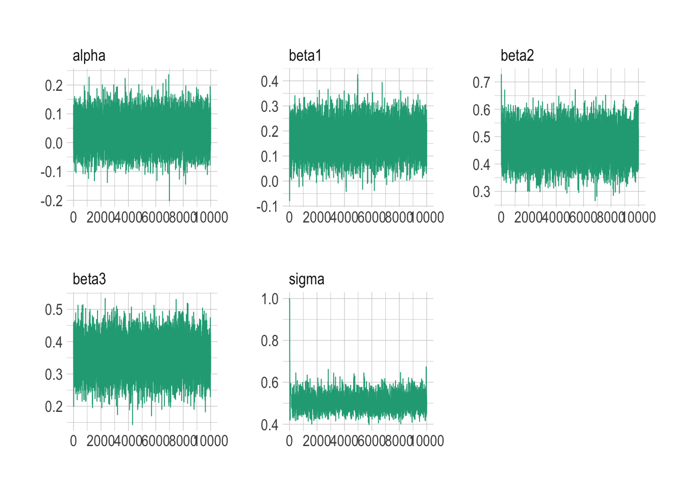

set.seed(1)
p <- 3 # number of explanatory variables
n <- 100 # number of observations
X <- matrix(round(rnorm(p * n), 2), nrow = n, ncol = p) # explanatory variables
true_betas <- c(c(0.2, 0.5, 0.3)) # coefficients
sigma <- 0.5
y <- rnorm(n, X %*% true_betas, sigma)Introduction to Bayesian Methods
SHARP Bayesian Modeling for Environmental Health Workshop
Goal of this computing lab session
This lab will involve taking some concepts from the Bayesian methods lecture and introduce you to the way NIMBLE works.
Introduction to NIMBLE
NIMBLE is written in a slightly unusual format if you’re used to just using base R. It is written in the style of a program called BUGS, which came out a few decades ago and was developed at Imperial College London.
We will start with some really basic examples to introduce the style of writing models. These examples will feature basic regression models using linear predictors.
These models have been adapted from NIMBLE’s examples.
Normal-Normal example
\[ \begin{split} y_i &\sim \text{Normal}(\mu_i, \sigma) \quad i = 1,..., N \\ \mu_i &= \alpha + \beta_1 x_1 + \beta_2 x_2 + \beta_3 x_3 \end{split} \]
First create some example data for our model:
What does the dataset look like?
df <- tibble(y = y, x1 = X[,1], x2 = X[,2], x3 = X[,3])
df# A tibble: 100 × 4
y x1 x2 x3
<dbl> <dbl> <dbl> <dbl>
1 0.134 -0.63 -0.62 0.41
2 0.0394 0.18 0.04 1.69
3 0.840 -0.84 -0.91 1.59
4 0.109 1.6 0.16 -0.33
5 -0.119 0.33 -0.65 -2.29
6 2.23 -0.82 1.77 2.5
7 0.700 0.49 0.72 0.67
8 1.05 0.74 0.91 0.54
9 -0.209 0.58 0.38 -0.01
10 1.09 -0.31 1.68 0.51
# ℹ 90 more rowsWhat does equivalent frequentist model output look like for reference? What’s the interpretation of the 95% CI?
model_freq <- lm(
y ~ x1 + x2 + x3,
data = df
)
central_est <- t(t(model_freq$coefficients))
conf_int <- confint(model_freq)
cbind(central_est, conf_int) 2.5 % 97.5 %
(Intercept) 0.02637957 -0.07351032 0.1262695
x1 0.17094550 0.06003795 0.2818530
x2 0.47246402 0.36845075 0.5764773
x3 0.35246949 0.25613504 0.4488039Let’s rewrite this model in a Bayesian framework using NIMBLE.
code <- nimbleCode({
# priors for parameters
alpha ~ dnorm(0, sd = 100) # prior for alpha
beta1 ~ dnorm(0, sd = 100) # prior for beta1
beta2 ~ dnorm(0, sd = 100) # prior for beta2
beta3 ~ dnorm(0, sd = 100) # prior for beta3
sigma ~ dunif(0, 100) # prior for variance components
# regression formula
for(i in 1:n) {
mu[i] <- alpha + beta1 * x1[i] + beta2 * x2[i] + beta3 * x3[i] # manual entry of linear predictors
y[i] ~ dnorm(mu[i], sd = sigma)
}
})Before running NIMBLE, extract data for three predictors and center around zero for better MCMC performance.
x1 <- X[,1] - mean(X[,1])
x2 <- X[,2] - mean(X[,2])
x3 <- X[,3] - mean(X[,3])Final preparation of data into lists.
constants <- list(n = n)
data <- list(y = y, x1 = x1, x2 = x2, x3 = x3)Set initial values for MCMC samples
inits <- list(alpha = 0, beta1 = 0, beta2 = 0, beta3 = 0, sigma = 1)The following code will establish which samples will be used in the sampling of the posteriors. If there is a conjugate relationship apparent between prior and posterior (e.g., Normal-Normal, Binomial-Beta, Poisson-Gamma), NIMBLE will automatically detect it here.
model <- nimbleModel(code, constants = constants, data = data, inits = inits)Defining modelBuilding modelSetting data and initial valuesRunning calculate on model
[Note] Any error reports that follow may simply reflect missing values in model variables.Checking model sizes and dimensionsmcmcConf <- configureMCMC(model)===== Monitors =====
thin = 1: alpha, beta1, beta2, beta3, sigma
===== Samplers =====
RW sampler (1)
- sigma
conjugate sampler (4)
- alpha
- beta1
- beta2
- beta3Run the MCMC simulations
tic = Sys.time()
nimbleMCMC_samples_initial <- nimbleMCMC(
code = code,
data = data,
constants = constants,
inits = inits,
niter = 10000, # run 10000 samples
setSeed = 1,
samplesAsCodaMCMC = TRUE
)Defining modelBuilding modelSetting data and initial valuesRunning calculate on model
[Note] Any error reports that follow may simply reflect missing values in model variables.Checking model sizes and dimensionsChecking model calculationsCompiling
[Note] This may take a minute.
[Note] Use 'showCompilerOutput = TRUE' to see C++ compilation details.running chain 1...|-------------|-------------|-------------|-------------|
|-------------------------------------------------------|toc = Sys.time()
toc - ticTime difference of 8.832514 secsWhat is the summary of each estimated parameter from the samples?
summarise_draws(nimbleMCMC_samples_initial, default_summary_measures())# A tibble: 5 × 7
variable mean median sd mad q5 q95
<chr> <num> <num> <num> <num> <num> <num>
1 alpha 0.0373 0.0377 0.0507 0.0504 -0.0459 0.121
2 beta1 0.170 0.170 0.0568 0.0566 0.0764 0.263
3 beta2 0.473 0.473 0.0534 0.0531 0.384 0.560
4 beta3 0.353 0.354 0.0497 0.0501 0.270 0.434
5 sigma 0.506 0.502 0.0389 0.0360 0.449 0.572summarise_draws(nimbleMCMC_samples_initial, default_convergence_measures())# A tibble: 5 × 4
variable rhat ess_bulk ess_tail
<chr> <num> <num> <num>
1 alpha 1.00 10117. 10003.
2 beta1 1.00 10137. 9962.
3 beta2 1.00 9961. 9713.
4 beta3 1.00 9536. 9301.
5 sigma 1.00 2003. 2130.What do the samples of one of the unknown parameters actually look like? Let’s have a look at beta1 (which we know is 0.2).
mcmc_trace(nimbleMCMC_samples_initial)
So it looks like the samples are converging quickly from the initial parameter to ~0.2. But typically we will throw some samples at the beginning to ensure that the transient samples (which is when the model samples haven’t stabilized around a particular value) are not included in calculating estimates of the mean and credible intervals. For example, you can see how the sigma parameter had to jump from it’s initial value of 1.0 before stabilizing. This period where we throw away samples is called the ‘burn in’ period.
Let’s do it again but with a burn in of 1000 samples.
tic = Sys.time()
nimbleMCMC_samples_burnin <- nimbleMCMC(
code = code,
data = data,
constants = constants,
inits = inits,
niter = 10000, # collect 10000 samples
nburnin = 1000, # burn in for 1000 iterations
setSeed = 1,
samplesAsCodaMCMC = TRUE
)Defining modelBuilding modelSetting data and initial valuesRunning calculate on model
[Note] Any error reports that follow may simply reflect missing values in model variables.Checking model sizes and dimensionsChecking model calculationsCompiling
[Note] This may take a minute.
[Note] Use 'showCompilerOutput = TRUE' to see C++ compilation details.running chain 1...|-------------|-------------|-------------|-------------|
|-------------------------------------------------------|toc = Sys.time()
toc - ticTime difference of 7.337954 secsWhat is the summary of each estimated parameter from the samples with burn in?
summarise_draws(nimbleMCMC_samples_burnin, default_summary_measures())# A tibble: 5 × 7
variable mean median sd mad q5 q95
<chr> <num> <num> <num> <num> <num> <num>
1 alpha 0.0373 0.0377 0.0507 0.0503 -0.0454 0.121
2 beta1 0.170 0.169 0.0570 0.0564 0.0760 0.264
3 beta2 0.473 0.473 0.0533 0.0533 0.385 0.561
4 beta3 0.352 0.353 0.0497 0.0504 0.270 0.433
5 sigma 0.506 0.503 0.0371 0.0355 0.449 0.574summarise_draws(nimbleMCMC_samples_burnin, default_convergence_measures())# A tibble: 5 × 4
variable rhat ess_bulk ess_tail
<chr> <num> <num> <num>
1 alpha 1.00 9136. 9068.
2 beta1 1.00 9066. 8937.
3 beta2 1.00 9048. 8779.
4 beta3 1.00 8691. 8396.
5 sigma 1.00 2063. 2295.Now the samples look to be very tidily centred around 0.2.
mcmc_trace(nimbleMCMC_samples_burnin)Let’s try changing the priors and see if that makes any difference to how the model fits.
code_worse_priors <- nimbleCode({
# priors for parameters
alpha ~ dnorm(0, sd = 100) # prior for alpha
beta1 ~ dnorm(0, sd = 100) # prior for beta1
beta2 ~ dunif(100, 100000) # prior for beta2
beta3 ~ dnorm(0, sd = 100) # prior for beta3
sigma ~ dunif(0, 100) # prior for variance components
# regression formula
for(i in 1:n) {
mu[i] <- alpha + beta1 * x1[i] + beta2 * x2[i] + beta3 * x3[i] # manual entry of linear predictors
y[i] ~ dnorm(mu[i], sd = sigma)
}
})Run the MCMC simulations
tic = Sys.time()
nimbleMCMC_samples_worse_priors <- nimbleMCMC(
code = code_worse_priors,
data = data,
constants = constants,
inits = list(alpha = 0, beta1 = 0, beta2 = 1000, beta3 = 0, sigma = 1),
niter = 10000,
nburnin = 1000,
setSeed = 1,
samplesAsCodaMCMC = TRUE
)Defining modelBuilding modelSetting data and initial valuesRunning calculate on model
[Note] Any error reports that follow may simply reflect missing values in model variables.Checking model sizes and dimensionsChecking model calculationsCompiling
[Note] This may take a minute.
[Note] Use 'showCompilerOutput = TRUE' to see C++ compilation details.running chain 1...|-------------|-------------|-------------|-------------|
|-------------------------------------------------------|toc = Sys.time()
toc - ticTime difference of 6.95829 secsWhat is the summary of each estimated parameter from the samples with different priors?
summarise_draws(nimbleMCMC_samples_worse_priors, default_summary_measures())# A tibble: 5 × 7
variable mean median sd mad q5 q95
<chr> <num> <num> <num> <num> <num> <num>
1 alpha -0.114 -0.0518 9.40 9.53 -15.5 15.4
2 beta1 0.105 0.212 10.3 10.4 -17.1 17.0
3 beta2 102. 101. 13.9 0.714 100. 103.
4 beta3 5.05 5.16 9.16 9.12 -10.0 20.0
5 sigma 94.0 94.7 4.36 4.73 85.8 99.6summarise_draws(nimbleMCMC_samples_worse_priors, default_convergence_measures())# A tibble: 5 × 4
variable rhat ess_bulk ess_tail
<chr> <num> <num> <num>
1 alpha 1.00 8805. 8637.
2 beta1 1.00 9027. 8425.
3 beta2 1.00 434. 225.
4 beta3 1.00 8369. 8037.
5 sigma 1.01 137. 123.mcmc_trace(nimbleMCMC_samples_worse_priors)You can see how the model cannot recover the true value of beta2 because of our choice of prior. By using a uniform prior without support for the true value of beta2, the model has increased its variance to try and cope with the data. This is a warning: even though the mode has converged, it might not be a good model.
Back to our sensible priors, say we wanted to establish the estimated difference between two betas? Let’s say beta1 and beta2 in this case.
code_diff_betas <- nimbleCode({
# priors for parameters
alpha ~ dnorm(0, sd = 100) # prior for alpha
beta1 ~ dnorm(0, sd = 100) # prior for beta1
beta2 ~ dnorm(0, sd = 100) # prior for beta2
beta3 ~ dnorm(0, sd = 100) # prior for beta3
sigma ~ dunif(0, 100) # prior for variance components
# regression formula
for(i in 1:n) {
mu[i] <- alpha + beta1*x1[i] + beta2*x2[i] + beta3*x3[i]
y[i] ~ dnorm(mu[i], sd = sigma)
}
# difference between beta1 and beta2
beta12_diff <- beta2 - beta1
})Run the MCMC simulations and specifically monitor differences between beta1 and beta2.
parameters_to_monitor = c('beta12_diff')
tic = Sys.time()
nimbleMCMC_samples_beta12_diff = nimbleMCMC(
code = code_diff_betas,
data = data,
constants = constants,
inits = inits,
monitors = parameters_to_monitor,
niter = 10000,
nburnin = 1000,
setSeed = 1,
samplesAsCodaMCMC = TRUE
)Defining modelBuilding modelSetting data and initial valuesRunning calculate on model
[Note] Any error reports that follow may simply reflect missing values in model variables.Checking model sizes and dimensionsChecking model calculationsCompiling
[Note] This may take a minute.
[Note] Use 'showCompilerOutput = TRUE' to see C++ compilation details.running chain 1...|-------------|-------------|-------------|-------------|
|-------------------------------------------------------|toc = Sys.time()
toc - ticTime difference of 7.353188 secsWhat is the summary of each estimated parameter from the samples when monitoring difference between beta1 and beta2?
summarise_draws(nimbleMCMC_samples_beta12_diff, default_summary_measures())# A tibble: 1 × 7
variable mean median sd mad q5 q95
<chr> <num> <num> <num> <num> <num> <num>
1 beta12_diff 0.303 0.303 0.0781 0.0785 0.175 0.430summarise_draws(nimbleMCMC_samples_beta12_diff, default_convergence_measures())# A tibble: 1 × 4
variable rhat ess_bulk ess_tail
<chr> <num> <num> <num>
1 beta12_diff 1.00 9245. 8816.Equally, we could do this by operating on the samples themselves from the original model.
(nimbleMCMC_samples_burnin[, "beta2"] - nimbleMCMC_samples_burnin[, "beta1"]) |> as.numeric() |> summary() Min. 1st Qu. Median Mean 3rd Qu. Max.
0.02013 0.25016 0.30331 0.30303 0.35602 0.60417 Logistic regression example.
Logistic regression is used when we want to classify observations into two groups. \[ \begin{split} y_i &\sim \text{Bernoulli}(p_i) \quad i = 1,..., N \\ \text{logit}(p_i) &= \alpha + \beta_1 x_1 + \beta_2 x_2 + \beta_3 x_3 \end{split} \]
Note, a Bernoulli likelihood is equivalent to a Binomial with sample size 1.
First create some example data for our model:
n <- 10000
p <- 3
set.seed(1)
x1 <- round(rnorm(n), 2)
x2 <- round(rnorm(n), 2)
x3 <- round(rnorm(n), 2)
z <- 1 + 2 * x1 + 3 * x2 - 5 * x3 # linear combination with a bias
pr <- 1 / (1 + exp(-z)) # pass through an inv-logit function
y <- rbinom(n, 1, pr) # bernoulli response variableWhat does the dataset look like?
df <- tibble(y = y, x1 = x1, x2 = x2, x3 = x3)
df# A tibble: 10,000 × 4
y x1 x2 x3
<int> <dbl> <dbl> <dbl>
1 0 -0.63 -0.8 0.24
2 0 0.18 -1.06 0.24
3 1 -0.84 -1.04 -0.64
4 1 1.6 -1.19 -1.93
5 0 0.33 -0.5 1.04
6 0 -0.82 -0.52 -0.28
7 1 0.49 -0.3 -1.41
8 0 0.74 0.47 0.72
9 0 0.58 -0.25 2.03
10 1 -0.31 1.26 0.73
# ℹ 9,990 more rowsWhat does equivalent frequentist model output look like for reference?
# now feed it to glm:
model_freq = glm(
y ~ x1 + x2 + x3,
family = "binomial",
data = df
)
central_est = t(t(model_freq$coefficients))
conf_int = confint(model_freq)Waiting for profiling to be done...cbind(central_est, conf_int) 2.5 % 97.5 %
(Intercept) 0.9708841 0.8815055 1.062135
x1 1.9996467 1.8804927 2.122818
x2 3.0673555 2.9106508 3.230181
x3 -5.0590851 -5.3043405 -4.823787Create the NIMBLE model
code_binomial <- nimbleCode({
# priors for parameters
alpha ~ dnorm(0, sd = 100) # prior for alpha
beta1 ~ dnorm(0, sd = 100) # prior for beta1
beta2 ~ dnorm(0, sd = 100) # prior for beta2
beta3 ~ dnorm(0, sd = 100) # prior for beta3
# regression formula
for(i in 1:n) {
y[i] ~ dbin(p[i], 1)
logit(p[i]) <- alpha + beta1 * x1[i] + beta2 * x2[i] + beta3 * x3[i]
}
})Before running NIMBLE, extract data for three predictors and center around zero for better MCMC performance
x1 <- x1 - mean(x1)
x2 <- x2 - mean(x2)
x3 <- x3 - mean(x3)Final preparation of data into lists
constants <- list(n = n)
data <- list(y = y, x1 = x1, x2 = x2, x3 = x3)Set initial values for MCMC samples
inits <- list(alpha = 0, beta1 = 0, beta2 = 0, beta3 = 0)Let NIMBLE find out if there is a conjugate relationship between prior and posterior (e.g., Normal-Normal, Binomial-Beta, Poisson-Gamma)
model_binomial <- nimbleModel(code_binomial, constants = constants, data = data, inits = inits)Defining modelBuilding modelSetting data and initial valuesRunning calculate on model
[Note] Any error reports that follow may simply reflect missing values in model variables.Checking model sizes and dimensionsmcmcConf <- configureMCMC(model_binomial)===== Monitors =====
thin = 1: alpha, beta1, beta2, beta3
===== Samplers =====
RW sampler (4)
- alpha
- beta1
- beta2
- beta3Let’s run the model.
tic = Sys.time()
nimbleMCMC_samples_binomial <- nimbleMCMC(
code = code_binomial,
data = data,
constants = constants,
inits = inits,
niter = 10000,
nburnin = 1000,
setSeed = 1,
samplesAsCodaMCMC = TRUE
)Defining modelBuilding modelSetting data and initial valuesRunning calculate on model
[Note] Any error reports that follow may simply reflect missing values in model variables.Checking model sizes and dimensionsChecking model calculationsCompiling
[Note] This may take a minute.
[Note] Use 'showCompilerOutput = TRUE' to see C++ compilation details.running chain 1...|-------------|-------------|-------------|-------------|
|-------------------------------------------------------|toc = Sys.time()
toc - ticTime difference of 40.19937 secsWhat is the summary of each estimated parameter from the binomial model?
summarise_draws(nimbleMCMC_samples_binomial, default_summary_measures())# A tibble: 4 × 7
variable mean median sd mad q5 q95
<chr> <num> <num> <num> <num> <num> <num>
1 alpha 0.908 0.909 0.0450 0.0447 0.833 0.982
2 beta1 2.00 2.00 0.0620 0.0622 1.90 2.11
3 beta2 3.07 3.07 0.0836 0.0851 2.94 3.21
4 beta3 -5.07 -5.07 0.124 0.131 -5.27 -4.87 summarise_draws(nimbleMCMC_samples_binomial, default_convergence_measures())# A tibble: 4 × 4
variable rhat ess_bulk ess_tail
<chr> <num> <num> <num>
1 alpha 1.00 764. 1545.
2 beta1 1.00 343. 1101.
3 beta2 1.00 278. 837.
4 beta3 1.00 255. 853.Now the samples for beta1 look to be very tidily centered around 2.
mcmc_trace(nimbleMCMC_samples_binomial)
Poisson example.
\[ \begin{split} y_i &\sim \text{Pois}(\mu_i) \quad i = 1,..., N \\ \log(\mu_i) &= \alpha + \beta_1 x_1 + \beta_2 x_2 + \beta_3 x_3 \end{split} \]
Again, let’s make some simulated data
n = 10000
set.seed(1)
x1 <- round(rnorm(n), 2)
x2 <- round(rnorm(n), 2)
x3 <- round(rnorm(n), 2)
z = 4 + 0.3 * x1 - 0.1 * x2 + 0.6 * x3
lambda = exp(z)
y = rpois(n, lambda)What does the dataset look like?
df <- tibble(y = y, x1 = x1, x2 = x2, x3 = x3)
df# A tibble: 10,000 × 4
y x1 x2 x3
<int> <dbl> <dbl> <dbl>
1 61 -0.63 -0.8 0.24
2 81 0.18 -1.06 0.24
3 29 -0.84 -1.04 -0.64
4 39 1.6 -1.19 -1.93
5 113 0.33 -0.5 1.04
6 43 -0.82 -0.52 -0.28
7 32 0.49 -0.3 -1.41
8 106 0.74 0.47 0.72
9 208 0.58 -0.25 2.03
10 70 -0.31 1.26 0.73
# ℹ 9,990 more rowsWhat does equivalent frequentist model output look like for reference? What’s the interpretation of the 95% CI?
# now feed it to glm:
model_freq = glm(
y ~ x1 + x2 + x3,
family = "poisson",
data = df
)
central_est = t(t(model_freq$coefficients))
conf_int = confint(model_freq)Waiting for profiling to be done...cbind(central_est, conf_int) 2.5 % 97.5 %
(Intercept) 3.99983512 3.9969693 4.00269787
x1 0.30008642 0.2977384 0.30243455
x2 -0.09972148 -0.1021164 -0.09732667
x3 0.60080907 0.5984493 0.60316886Create the NIMBLE model
code_poisson <- nimbleCode({
# priors for parameters
alpha ~ dnorm(0, sd = 100) # prior for alpha
beta1 ~ dnorm(0, sd = 100) # prior for beta1
beta2 ~ dnorm(0, sd = 100) # prior for beta2
beta3 ~ dnorm(0, sd = 100) # prior for beta3
# regression formula
for(i in 1:n) {
y[i] ~ dpois(lambda[i])
log(lambda[i]) <- alpha + beta1 * x1[i] + beta2 * x2[i] + beta3 * x3[i]
}
})Before running NIMBLE, extract data for three predictors and center around zero for better MCMC performance
x1 <- x1 - mean(x1)
x2 <- x2 - mean(x2)
x3 <- x3 - mean(x3)Final preparation of data into lists
constants <- list(n = n)
data <- list(y = y, x1 = x1, x2 = x2, x3 = x3)Set initial values for MCMC samples
inits <- list(alpha = 0, beta1 = 0, beta2 = 0, beta3 = 0)Are there any conjugate relationships?
model_poisson <- nimbleModel(code_poisson, constants = constants, data = data, inits = inits)Defining modelBuilding modelSetting data and initial valuesRunning calculate on model
[Note] Any error reports that follow may simply reflect missing values in model variables.Checking model sizes and dimensionsmcmcConf <- configureMCMC(model_poisson)===== Monitors =====
thin = 1: alpha, beta1, beta2, beta3
===== Samplers =====
RW sampler (4)
- alpha
- beta1
- beta2
- beta3Let’s run the model.
tic = Sys.time()
nimbleMCMC_samples_poisson <- nimbleMCMC(
code = code_poisson,
data = data,
constants = constants,
inits = inits,
niter = 10000,
nburnin = 1000,
setSeed = 1,
samplesAsCodaMCMC = TRUE
)Defining modelBuilding modelSetting data and initial valuesRunning calculate on model
[Note] Any error reports that follow may simply reflect missing values in model variables.Checking model sizes and dimensionsChecking model calculationsCompiling
[Note] This may take a minute.
[Note] Use 'showCompilerOutput = TRUE' to see C++ compilation details.running chain 1...|-------------|-------------|-------------|-------------|
|-------------------------------------------------------|toc = Sys.time()
toc - ticTime difference of 46.1093 secsWhat is the summary of each estimated parameter from the Poisson model?
summarise_draws(nimbleMCMC_samples_poisson, default_summary_measures())# A tibble: 4 × 7
variable mean median sd mad q5 q95
<chr> <num> <num> <num> <num> <num> <num>
1 alpha 4.00 4.00 0.00145 0.00146 4.00 4.01
2 beta1 0.300 0.300 0.00120 0.00120 0.298 0.302
3 beta2 -0.0997 -0.0997 0.00123 0.00124 -0.102 -0.0977
4 beta3 0.601 0.601 0.00124 0.00126 0.599 0.603 summarise_draws(nimbleMCMC_samples_poisson, default_convergence_measures())# A tibble: 4 × 4
variable rhat ess_bulk ess_tail
<chr> <num> <num> <num>
1 alpha 1.00 834. 1498.
2 beta1 1.00 1358. 1905.
3 beta2 1.00 1979. 2125.
4 beta3 1.00 1075. 1632.Now the samples for beta1 look to be very tidily centred around 0.3.
mcmc_trace(nimbleMCMC_samples_poisson)
Closing remarks
In this lab session, we have explored how to fit some basic models using Bayesian regression in NIMBLE. We looked at the three most common likelihoods: Normal, Binomial, and Poisson.
We used simulated data here, so we had complete control over the complexity in the data. However, in the real world, we would often try many different models if we do not know how the data were generated. Also, not all real life examples fit the any of the three likelihoods perfectly. For example, the data might be “overdispersed”, where there is greater variability in the data than would be expected. Luckily, there are extensions to these likelihoods that can deal with overdispersion, such as the beta-binomial likelhood for overdispersed binomial data, or the negative binomial likelihood (sometimes called the gamma-Poisson) for overdispersed Poisson data. For more information on these likelihoods, see Chapter 12 of Statistical Rethinking by Richard McElreath.